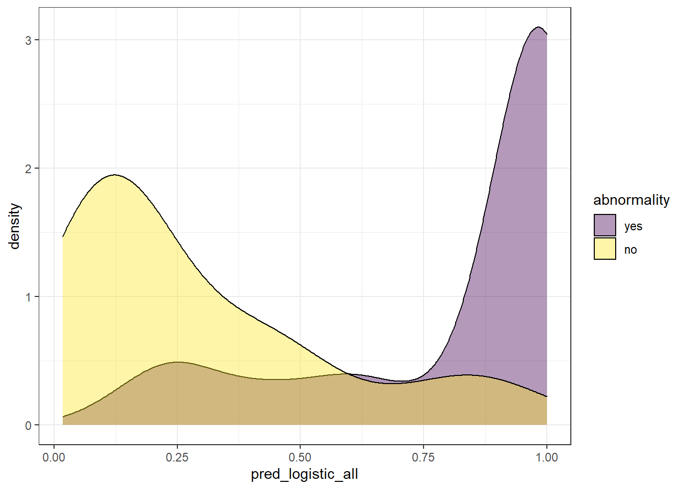
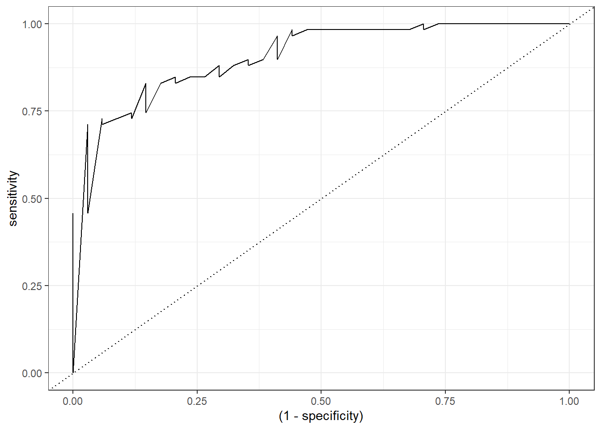
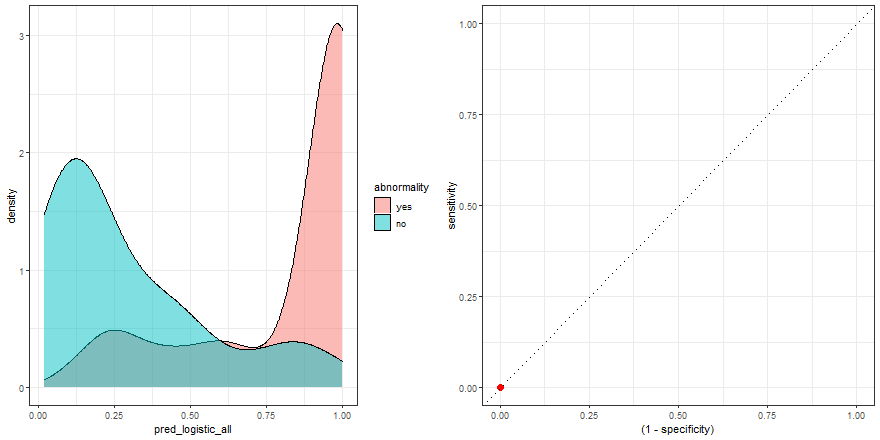
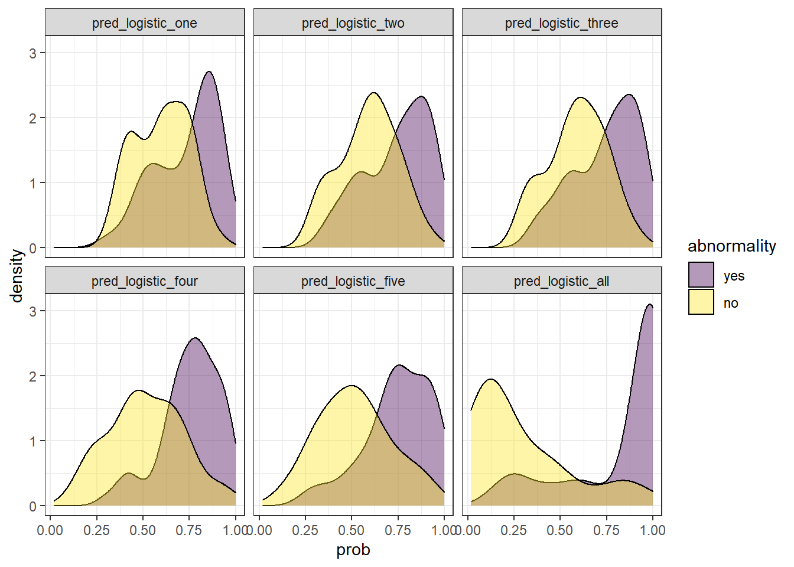
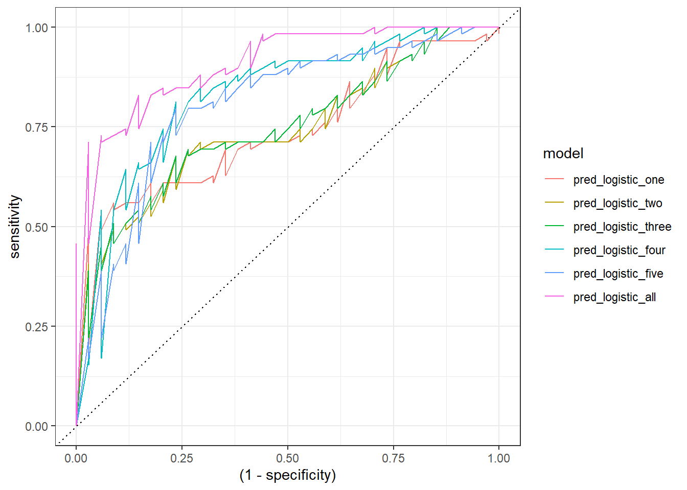
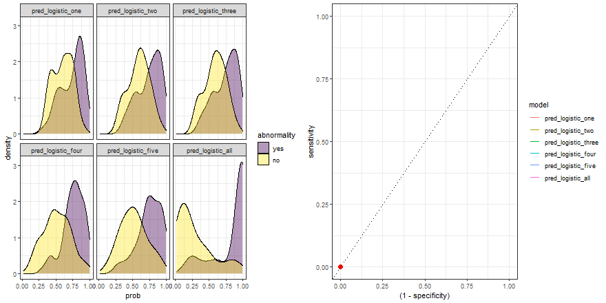

library(tidyverse)
library(gganimate) # animated plots
library(magick) # combine two gif
library(yardstick) # roc_curve helper
library(parsnip) # train logistic regression models
# Source: https://archive.ics.uci.edu/ml/machine-learning-databases/00212/
verterbral <- read.table('data/column_2C.dat', header = FALSE, sep = ' ')
colnames(verterbral) <- c('pelvic_incidence',
'pelvic_tilt',
'lumbar_lordosis_angle',
'sacral_slope', 'pelvic_radius',
'degree_spondylolisthesis', 'abnormality')
verterbral <- verterbral %>%
select(abnormality, everything()) %>%
mutate(id = row_number()) %>%
mutate(abnormality = factor(if_else(abnormality == 'AB', 'yes', 'no'),
levels = c('yes', 'no')))Overview
Receiver operating characteristic (ROC) curves is one of the concepts I have struggled most. As a personal view, I do not find it intuitive or clear at first glance. Possibly, because we are used to interpreting information as single values, such as mean, median, accuracy…ROC curves are different because it represents a group of values conforming a curve. Besides, it is the most popular way to represent a model performance for a particular dataset where the task is a binary classification.
Before explaining where the ROC curves come from, let’s focus on what is the outcome of most of the classification models. To illustrate this point, let’s train a few logistic regression models with a toy dataset and use the package parsnip which provides a common interface to train models from many other packages.
Data
For this post, we are going to use a dataset that includes 310 patients and six explanatory variables related to biomechanical features of the vertebral column. Besides, it contains a response variable abnormality that defines if the patient has been diagnosed with a medical condition in the vertebral column (yes and no).
Split data
…and split it in training (70%) and test set (30%).
set.seed(992)
training_ids <- verterbral %>% sample_frac(0.7) %>% pull(id)
vert_training <- verterbral %>%
filter(id %in% training_ids)
vert_test <- verterbral %>%
filter(!id %in% training_ids)Train models
logistic_model_one <- logistic_reg() %>%
set_engine("glm") %>%
set_mode("classification") %>%
fit(abnormality ~ pelvic_incidence, data = vert_training)
logistic_model_two <- logistic_reg() %>%
set_engine("glm") %>%
set_mode("classification") %>%
fit(abnormality ~ pelvic_incidence + pelvic_tilt, data = vert_training)
logistic_model_three <- logistic_reg() %>%
set_engine("glm") %>%
set_mode("classification") %>%
fit(abnormality ~ pelvic_incidence + pelvic_tilt + sacral_slope, data = vert_training)
logistic_model_four <- logistic_reg() %>%
set_engine("glm") %>%
set_mode("classification") %>%
fit(abnormality ~ pelvic_incidence + pelvic_tilt + sacral_slope + pelvic_radius, data = vert_training)
logistic_model_five <- logistic_reg() %>%
set_engine("glm") %>%
set_mode("classification") %>%
fit(abnormality ~ pelvic_incidence + pelvic_tilt + sacral_slope + pelvic_radius + lumbar_lordosis_angle, data = vert_training)
logistic_model_all <- logistic_reg() %>%
set_engine("glm") %>%
set_mode("classification") %>%
fit(abnormality ~ ., data = vert_training[,-ncol(vert_training)])
check_pred <- vert_test %>%
select(id) %>%
mutate( pred_logistic_one = predict(logistic_model_one, vert_test, type = 'prob')$.pred_yes,
pred_logistic_two = predict(logistic_model_two, vert_test, type = 'prob')$.pred_yes,
pred_logistic_three = predict(logistic_model_three, vert_test, type = 'prob')$.pred_yes,
pred_logistic_four = predict(logistic_model_four, vert_test, type = 'prob')$.pred_yes,
pred_logistic_five = predict(logistic_model_five, vert_test, type = 'prob')$.pred_yes,
pred_logistic_all = predict(logistic_model_all, vert_test, type = 'prob')$.pred_yes
) %>%
left_join(verterbral %>% select(id, abnormality), by = 'id')Plot raw outcome
check_pred %>% glimpse()Rows: 93
Columns: 8
$ id <int> 1, 3, 6, 9, 10, 11, 12, 13, 20, 22, 27, 43, 44, 48…
$ pred_logistic_one <dbl> 0.7499979, 0.8028267, 0.4747471, 0.5213208, 0.4283…
$ pred_logistic_two <dbl> 0.7940143, 0.8233949, 0.5251698, 0.5516503, 0.3831…
$ pred_logistic_three <dbl> 0.7939271, 0.8233653, 0.5240107, 0.5505372, 0.3813…
$ pred_logistic_four <dbl> 0.9301525, 0.9029361, 0.4239115, 0.5079236, 0.8360…
$ pred_logistic_five <dbl> 0.9035941, 0.8837432, 0.3236233, 0.5683134, 0.9143…
$ pred_logistic_all <dbl> 0.7531384, 0.2486521, 0.4043606, 0.8549908, 0.9448…
$ abnormality <fct> yes, yes, yes, yes, yes, yes, yes, yes, yes, yes, …For each observation of the test set, the models retrieve a probability. This value represents how likely that observation belongs to the label abnormality == yes[1].
Probability is not a particular output format of logistic regressions models [2], but a standard way of many models. For instance, models based on tree decisions, such as gradient boosting [3] or random forest, retrieve probabilities as output.
To make it simple, for now, we will use only the predicted values (pred_logistic_all) from the trained model that used all the explanatory variables.
Since we have all the probabilities values retrieved by the model in the variable pred_logistic_all, we can explore the distribution of the model’s outcome. To do this, there are two common ways: boxplot and density plots. For the scope of this post, we are going to use the latter. Besides, since our observations are defined by two label options (survival == ‘yes’, survival = ‘no’), we are going to plot two different distributions, one for each label:
check_pred %>%
ggplot(aes(pred_logistic_all)) +
geom_density(aes(fill = abnormality), alpha = 0.4) +
theme_bw() +
scale_fill_viridis_d()
We can extract some ideas from the above plot:
Since this value represents the probability of an observation to belong to
abnormality = 'yes', it makes sense to find observations whose real label is ‘yes’ with high probability. On the other way around, we expect to find observations whose real label isabnormality = 'no'with low probability. Though this is what we expect, this is not always the case, since we find also observations whose probability of belonging toabnormality = 'yes'is quite low, even though, its real label isyes.There is a twilight zone, where we have observations from both labels levels that have “inaccurate” probabilities.
We can somehow see how well a model performed based on the overlapping of these two distributions.
A perfect model would retrieve both distributions with no overlapping.
Since these models do not retrieve directly the label of the response variable. A threshold to discretize a continuous probability is required to transform the probability into a label. This is a difficult part, because no matter where you define the threshold, we face a trade-off between the percentage of False Positives (FP) and False Negatives (FN). Besides, there is not a clear rule for it, and the results can be pretty arbitrary.
Another problem arises: if the selection of the threshold is arbitrary, how do we compare different models? Here it is where the ROC curves come out!
ROC curves try to overcome this issue, taking into account all the possible scenarios given multiple thresholds. This allows us to estimate the performance of our model independently of the threshold you take.
How to create a ROC curve?
To create a ROC curve, the starting point is precisely the same information we used to display the density plot: a column with predicted probabilities and another with the real labels. Each row is an observation of the test set.
Once we have this information, we define as many thresholds [4] as observations found in the test set (plus Inf and -Inf). These values are defined by the probability of each observation.
Furthermore, for each threshold value, all the probabilities above it will be identified as abnormality = yes and we count the number of True Positive (TP), True Negative (TN), but also, those observations predicted as abnormality = yes but actually are no (False Positive (FP)) and those predicted as no but actually are yes (False Negative (FN)).
Finally, we need this information to calculate the values that will make up the ROC curve axis:
- Sensitivity (also known as True positive rate). This metric reflects the number of positives in the test dataset that are correctly identified.
- Specificity (also known as True negative rate). This metric measures the number of negatives in the test dataset that are correctly identified.
In both cases, a result of 1 is considered perfect.
To facilitate this, there are multiple packages in R to calculate the ROC curve. For this case, I am going to use the function roc_curve from the package yardstick which I recommend.
Check the output of the function roc_curve:
# we just need to specify the column with the labels (abnormality) and the predicted probabilities (pred_logistic_all)
roc_logistic <- check_pred %>% roc_curve(abnormality, pred_logistic_all)
roc_logistic %>% head()# A tibble: 6 × 3
.threshold specificity sensitivity
<dbl> <dbl> <dbl>
1 -Inf 0 1
2 0.0179 0 1
3 0.0292 0.0294 1
4 0.0369 0.0588 1
5 0.0372 0.0882 1
6 0.0493 0.118 1Finally, for the visualization, we only need to modify the specificity variable as 1 - specificity:
roc_logistic %>%
ggplot(aes(x = (1 - specificity), y = sensitivity)) +
geom_line() +
geom_abline(linetype = 3) +
theme_bw()
Animated ROC curve
To build some intuition, we can see how to build the ROC curve while we define thresholds values in the density plot:
a <- check_pred %>%
ggplot() +
geom_density(aes(x = pred_logistic_all, fill = abnormality), alpha = 0.5) +
geom_vline(data = roc_logistic %>% filter( .threshold != Inf) %>% filter(.threshold != -Inf), aes(xintercept = .threshold, group = .threshold)) +
transition_reveal(.threshold) +
theme_bw()
b <- roc_logistic %>%
ggplot(aes(x = (1 - specificity), y = sensitivity)) +
geom_line() +
geom_point(colour = 'red', size = 3) +
transition_reveal(sensitivity) +
geom_abline(linetype = 3) +
theme_bw()
# Code below from https://github.com/thomasp85/gganimate/wiki/Animation-Composition
a_gif <- animate(a, width = 440, height = 440)
b_gif <- animate(b, width = 440, height = 440)
new_gif <- image_append(c(a_gif[1], b_gif[1]))
for(i in 2:100){
combined <- image_append(c(a_gif[i], b_gif[i]))
new_gif <- c(new_gif, combined)
}
new_gif
Comparing six models
At the beginning of this post, we trained five models, each one with a different number of explanatory variables: one, two, three, four, five, and six.
We can easily display their probability distribution:
comparison_six <- check_pred %>%
pivot_longer(starts_with('pred'), names_to = 'model', values_to = 'prob') %>%
mutate(model = fct_inorder(as.factor(model)))
comparison_six %>%
ggplot(aes(prob)) +
geom_density(aes(fill = abnormality), alpha = 0.4) +
theme_bw() +
scale_fill_viridis_d() +
facet_wrap(~ model)
In the example above, we observe that the overlapping between both distributions decreases as we increase the number of explanatory variables. In other words, since we increase the amount of useful information to discriminate between the two labels (yes, no), the predictive power of the model improves.
Besides, we can plot their ROC curves:
comparison_six %>%
group_by(model) %>%
roc_curve(abnormality, prob) %>%
ggplot(aes(x = (1 - specificity), y = sensitivity)) +
geom_line(aes(color = model)) +
geom_abline(linetype = 3) +
theme_bw()
Animated comparison
Finally, we can replicate the previous code and compare the six models:
roc_comparison <- comparison_six %>%
group_by(model) %>%
roc_curve(abnormality, prob) %>% ungroup()
a <- comparison_six %>%
ggplot(aes(prob)) +
geom_density(aes(fill = abnormality), alpha = 0.4) +
geom_vline(data = roc_comparison %>% filter(.threshold != Inf) %>% filter(.threshold != -Inf),
aes(xintercept = .threshold, group = .threshold)) +
theme_bw() +
scale_fill_viridis_d() +
transition_reveal(.threshold) +
facet_wrap(~ model)
b <- roc_comparison %>%
ggplot(aes(x = (1 - specificity), y = sensitivity, group = model)) +
geom_line(aes(color = model)) +
geom_point(colour = 'red', size = 3) +
transition_reveal(sensitivity) +
geom_abline(linetype = 3) +
theme_bw()
# Code below from https://github.com/thomasp85/gganimate/wiki/Animation-Composition
a_gif <- animate(a, width = 440, height = 440)
b_gif <- animate(b, width = 440, height = 440)geom_path: Each group consists of only one observation. Do you need to adjust
the group aesthetic?
geom_path: Each group consists of only one observation. Do you need to adjust
the group aesthetic?new_gif <- image_append(c(a_gif[1], b_gif[1]))
for(i in 2:100){
combined <- image_append(c(a_gif[i], b_gif[i]))
new_gif <- c(new_gif, combined)
}
new_gif
Notes
[1] The package yardstick as many other packages use the first level of the response variable factor as the “event”. Therefore, the probability output determines how likely an observation belongs to the first level of the factor of the response variable. This behavior can be changed in the yardstick package global options.
[2] The default output has a logit scale and needs to be transformed first to a probability value. This can be done automatically if we specify in the function predict the argument type as prob.
[3] Apart from tree decisions, linear models can be also used in gradient boosting.
[4] Because of this reason, ROC curves might not be appropriate to evaluate the performance of models on small test sets.